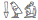

Intended audience: HTML/XML/CSS coders (using editors or scripting), script developers (PHP, JSP, etc.), and anyone who needs guidance on how and when to use alternatives to actual characters in a document.
How can I use character escapes in markup and CSS, and when should I use or not use them?
A character escape is a way of representing a character in source code using only ASCII characters. In HTML you can escape the euro sign € in the following ways.
| Format | Name |
|---|---|
€ |
hexadecimal numeric character reference |
| € | decimal numeric character reference |
| € | named character reference |
In CSS syntax you would use one of the following.
| Format | Notes |
|---|---|
| \20AC | must be followed by a space if the next character is one of a-f, A-F, 0-9 |
| \0020AC | must be 6 digits long, no space needed (but can be included) |
A trailing space is treated as part of the escape, so use 2 spaces if you actually want to follow the escaped character with a space. If using escapes in CSS identifiers, see the additional rules below.
Because you should use UTF-8 for the character encoding of the page, you won't normally need to use character escapes. You may however find them useful to represent invisible or ambiguous characters, or characters that would otherwise interact in undesirable ways with the surrounding source code or text.
For more details, see below.
You can use a character escape to represent any Unicode character in HTML, XHTML or XML using only ASCII characters.
Numeric character references (NCRs) and named character references are types of character escape used in markup. For example, the following are different ways of representing the character U+00A0 NO-BREAK SPACE.
(The NO-BREAK SPACE character looks like a space but prevents a line wrap between the characters on either side. In French it is commonly used with punctuation such as colons and exclamation marks, which are preceded by a space but should not appear at the beginning of a line during text wrap.)
 &# and end with ;. The x indicates that what follows is a hexadecimal number representing the code point value of a Unicode character. The hex number is not case-sensitive.
<p>Vive la France !</p> <p>Vive la France !</p> A named character reference. This is a very different type of escape. Named character references are defined in the markup language definition. This means, for example, that for HTML only a specific range of characters (defined by the HTML specification) can be represented as named character references (and that includes only a small subset of the Unicode range).
Note that the name is case sensitive: in HTML, Á represents the uppercase letter Á, whereas á represents the lowercase á.
<p>Vive la France !</p>One point worth special note is that values of numeric character references (such as € or € for the euro sign €) are interpreted as Unicode characters – no matter what encoding you use for your document.
For example, the code point number of the euro sign in Windows code page 1252 is 80. It is a common error for people working on content in that encoding to represent the euro sign using €. This HTML should actually produce a control character, since the escape would be expanded as the character at position 80 in the Unicode repertoire. (In fact, browsers tend to silently correct that particular error. See the test pages.)
CSS represents escaped characters in a different way. Escapes start with a backslash followed by the hexadecimal number that represents the character's hexadecimal Unicode code point value.
If there is a following character that is not in the range A–F, a–f or 0–9, that is all you need. The following example represents the word émotion.
\E9motionIf, on the other hand, the next character is one that can be used in hexadecimal numbers, it won't be clear where the end of the number is. In these cases there are two options. The first is to use a space after the escape. This space is part of the escape syntax, and does not remain after the character escape is parsed. The following example shows how you could represent the word édition so that the d is not assumed to be part of the escape.
\E9 ditionAlternatively, you can use a 6-digit hexadecimal number, with or without a space. Here is an alternative way of writing édition.
\0000E9ditionBecause any white-space following the hexadecimal number is swallowed up as part of the escape, if you actually want a space to appear after the escaped character you will need to add two spaces (after a hexadecimal number of any length).
Identifiers in CSS, such as class names in CSS selectors, can begin with - _ a-z or A-Z or a non-ASCII character, but cannot begin with any other ASCII character. However, escaped characters of any type can appear in any location.
This means that you can't start an identifier with an ASCII digit 0-9 (although you can use digits after the first character). So if the class name you want to refer to happens to begin with a digit you will need to escape it.
For example, to select an element in HTML with the class name "123", you would write the following.
.\31 23 { ... }Note the use of the space to separate the escaped part of the class name from the remainder, so that it's clear where the end of the escape is. If you had written \3123 this would represent ㄣ [U+3123 BOPOMOFO LETTER EN]. (You could also have written \00003123, since the CSS escape ends after the 6th character past the backslash.)
There is no need to also escape the '23' part of the identifier, since digits are allowed after the first position.
The following all show valid ways of escaping a sequence of characters, such as those in the sequence of Egyptian hieroglyphs , meaning 'voice'.
\13322\13171\13001
\13322 \13171 \13001
\013322\013171\013001
\013322 \013171 \013001
The backslash can also be used in CSS before a syntax character to prevent it being read as part of the code. For more information about CSS escapes, see the CSS Syntax Module.
It is almost always preferable to use an encoding that allows you to represent characters in their normal form, rather than using named character references or numeric character references.
Using escapes can make it difficult to read and maintain source code, and can also significantly increase file size.
Many English-speaking developers have the expectation that other languages only make occasional use of non-ASCII characters, but this is wrong.
Take for example the following passage in Czech.
Jako efektivnější se nám jeví pořádání tzv. Road Show prostřednictvím našich autorizovaných dealerů v Čechách a na Moravě, které proběhnou v průběhu září a října.
If you were to require numeric character references for all non-ASCII characters, the passage would become unreadable, difficult to maintain and much longer. It would, of course, be much worse for a language that didn't use Latin characters at all.
Jako efektivnĕjší se nám jeví pořádání tzv. Road Show prostřednictvím našich autorizovaných dealerů v Čechách a na Moravě, které proběhnou v průběhu září a října.
As we said before, use characters rather than escapes for ordinary text.
Use in XHTML. Using named character references in a document that is parsed as XML may become problematic if the entities are defined externally to your document and the tools that process the XML do not read the external files. In such cases the entity references will not be replaced by characters. For this reason, if you need to use escapes, it may be safer to use numeric character references, or define the character entities you need inside the document.
If you use HTML-defined named character references (such as á) to represent characters in XHTML, you should take care any time your content is processed using XML parsers or other tools.
Syntax characters. There are three characters that should always appear in content as escapes, so that they do not interact with the syntax of the markup. These are part of the language for all documents based on HTML and for XML.
< (<)
> (>)
& (&)
You may also want to represent the double-quote (") as " and the single quote (') as '. This would certainly be the case in attribute text when you need to use the same type of quotes as those that surround the attribute value.
Invisible or ambiguous characters. A particularly useful role for escapes is to represent characters that are invisible or ambiguous in presentation.
One example would be Unicode character U+200F RIGHT-TO-LEFT MARK. This character can be used to clarify directionality in bidirectional text (eg. when using the Arabic or Hebrew scripts). It has no graphic form, however, so it is difficult to see where these characters are in the text, and if they are lost or forgotten they could create unexpected results during later editing. Using ‏ (or its numeric character reference equivalent ‏) instead makes it very easy to spot these characters.
An example of an ambiguous character is U+00A0 NO-BREAK SPACE. This type of space prevents line breaking, but it looks just like any other space when used as a character. Using (or  ) makes it quite clear where such spaces appear in the text.
Input problems. If your editing tool does not allow you to easily enter needed characters you may also resort to using escapes. Note that this is not a long-term solution, nor one that works well if you have to enter a lot of such characters – it takes longer and makes maintenance more difficult. Ideally you would choose an editing tool that allowed you to enter these characters as characters. Alternatively, if you only need the occasional character, use a character map tool or character picker.
Encoding gaps. Escapes can be useful to represent characters not supported by the encoding you choose for the document, for example, to represent Chinese characters in a document encoded as Windows-1252. You should ask yourself first, however, why you have not changed the encoding of the document to UTF-8, which covers all the characters you need.
It is usually a good idea to put style information in an external style sheet or a style element in the head of an HTML file. Occasionally, or perhaps on a temporary basis, you may use a style attribute on a particular element, instead. Even more rarely, you may want to represent one or more characters in the style attribute using character escapes.
A style attribute in HTML can represent characters using numeric or named character references or CSS escapes. On the other hand, the style element in HTML can contain neither numeric nor named character references, and the same applies to an external style sheet.
Because there is a tendency to want to move styles declared in attributes to the style element or an external style sheet (for example, this might be done automatically using an application or script), it is safest to use only CSS escapes.
For example, it is better to use
<span style="font-family: L\FC beck">...</span>
than
<span style="font-family: Lübeck">...</span>
Changing to UTF-8 means re-saving your file. Using the character encoding UTF-8 for your page means that you can avoid the need for most escapes and just work with characters. Note, however, that to change the encoding of your document, it is not enough to just change the encoding declaration at the top of the page or on the server. You need to re-save your document in that encoding. For help understanding how to do that with your application read Setting encoding in web authoring applications.
Hex vs. decimal. Typically when the Unicode Standard refers to or lists characters it does so using a hexadecimal value. For instance, the code point
for the letter á may be referred to as U+00E1. Given the prevalence of this convention, it is often useful, though not
required, to use hexadecimal numeric values in escapes rather than decimal values. You do not need to use leading zeros in escapes, ie. á could be represented as á.
Supplementary characters. Supplementary characters are those Unicode characters beyond the Basic Multilingual Plane (BMP). In UTF-16 a supplementary character is encoded using two 16-bit surrogate code points from the BMP. Because of
this, or because of experience with older version s of JavaScript syntax, some people think that supplementary characters need to be represented using two escapes, but this is incorrect – you must use the single,
code point value for that character. For example, use 𣎴 rather than ��.
Single ampersands. Although HTML user agents have tended to turn a blind eye, you should never have a single ampersand (&) in your HTML document. You should pay particular attention to URIs that include parameters. For example, your document should contain http://example.org/my-script.php?class=guest&name=user, rather than http://example.org/my-script.php?class=guest&name=user.
Getting started? Introducing Character Sets and Encodings
Related links, Authoring HTML & CSS
Related links, Authoring XML
Related links, Developing specifications